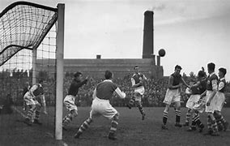

O futebol é definido em primeiro lugar como um jogo que inclui dois adversários e um árbitro com a capacidade de impor uma justiça imparcial. Cada adversário é composto por uma equipa de 11 jogadores em campo cada, com a opção de incluir jogadores suplentes durante o jogo de futebol.
O objetivo é rolar uma bola esférica para marcar um ponto , cuja pontuação é válida ao cruzar a linha limite da baliza adversária. Cada ponto conquistado é conhecido como gol , portanto, a equipe que marcar mais gols no decorrer de 90 minutos – tempo útil de uma partida – será a vencedora.
Cada equipe deve incluir em seu elenco um goleiro ou goleiro, único jogador capaz de tocar a bola com as mãos e com a função de impedir que a bola cruze seu próprio arco; um grupo de defensores; um grupo de flyers e finalmente um grupo de avançados. A tática de cada equipe pode variar de acordo com a preferência do diretor técnico responsável pela equipe de futebol.
O futebol tem raízes antigas que remontam a diversas culturas ao redor do mundo. Uma das formas primitivas do jogo foi documentada na China, por volta do século II e III a.C., conhecida como "Cuju", que envolvia chutar uma bola de couro para marcar gols em uma rede. Na Inglaterra medieval, jogos similares eram praticados, muitas vezes de forma violenta e caótica. No entanto, foi na Inglaterra do século XIX que o futebol moderno começou a ganhar forma, com a criação de regras mais organizadas e a fundação de clubes de futebol.
A Football Association (FA) foi estabelecida em 1863, marcando o início oficial do futebol organizado. Em 1872, ocorreu o primeiro jogo internacional reconhecido, entre Inglaterra e Escócia. O esporte rapidamente se espalhou pelo mundo, com a formação de federações nacionais e a popularização de competições locais e internacionais. A Copa do Mundo FIFA, criada em 1930, se tornou o principal torneio internacional de futebol.
O futebol cresceu em popularidade ao longo do século XX, tornando-se o esporte mais assistido e praticado globalmente. Grandes jogadores e equipes lendárias surgiram, contribuindo para a mitologia do esporte. O desenvolvimento tecnológico e a profissionalização do jogo trouxeram mudanças significativas, como a introdução da televisão, o aumento do investimento financeiro e a globalização do mercado de jogadores.
Hoje, o futebol é uma força cultural poderosa, transcendendo barreiras geográficas, sociais e culturais. Milhões de pessoas em todo o mundo se reúnem para assistir a jogos, seja nos estádios ou pela televisão, enquanto milhares de jovens sonham em se tornar os próximos grandes astros do esporte. O futebol continua a evoluir, enfrentando desafios como questões de igualdade, diversidade e sustentabilidade, enquanto mantém sua posição como uma paixão compartilhada por bilhões de pessoas.
